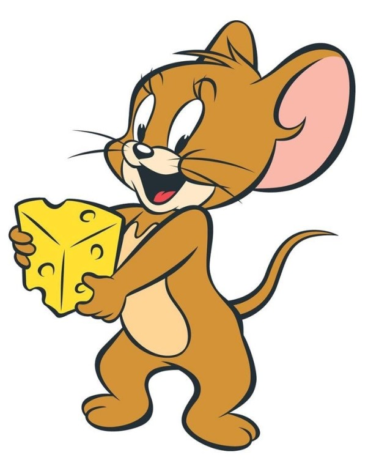

어서오세요, 여기는 제리의 지식백과 web입니다! 접속하신 여러분 모두 환영합니다:>모두 사막에 사는 동물들에 대해 알고 싶어서 접속하신거죠?그러면 잘 찾아오셨습니다 여러분의 모든 궁금증을 해결해 줄 곳이 바로 여기입니다 껄껄앞으로도 이 web사이트에서 다양한 지식과 정보들을 공유할 생각이니 많이 들어와 주세요!추가로 얻고 싶은 정보가 있으시다면 jerrie@catius.io로 메일 부탁 드립니다!